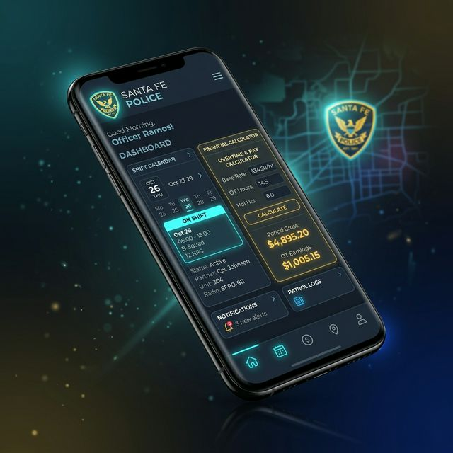
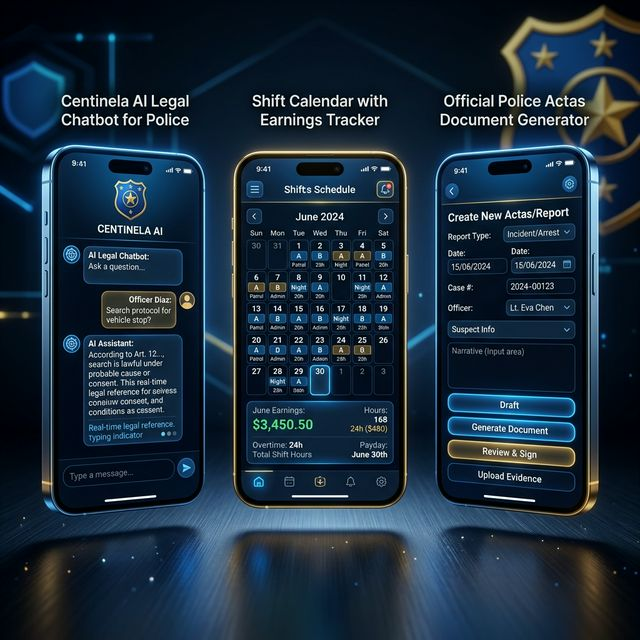

GESTIÓN INTELIGENTE DE SERVICIOS ADICIONALES
Organizá tu agenda de tercios, calculá tus haberes exactos de adicionales según la Ley 14.283 y Decretos 2026, generá actas de procedimiento en minutos y consultá al asistente legal Centinela AI. Funciona 100% fuera de línea (PWA).

Centinela AI v10
Ley 12.521 & ISEP Activos
100% Precisión Salarial
Ley 14283 & Dec. 0411/26
Modo Offline PWA
Sin consumo de datos
Ley 14283 & Dec. 0411/26
Herramientas Policiales PRO
Retardo Modo Sin Señal (PWA)
Asistente Legal Centinela AI
Diseñado por y para el Efectivo
Herramientas Policiales de Alto Nivel
Soluciones tecnológicas avanzadas diseñadas para simplificar el servicio operativo, las tareas administrativas en comisaría y la planificación financiera personal.
Centinela AI v10
Asistente legal virtual entrenado con la Ley 12.521, Decreto 461/15, Reforma Previsional 14.283, escalas salariales actualizadas y concursos ISEP. Respuestas inmediatas en servicio.
Calculadora de Adicionales
Cálculo automático de haberes para servicios adicionales Públicos, Privados, Bancarios y OSPE. Proyección de recargos nocturnos, fines de semana y liquidaciones finales.
Generador de Actas Policiales
Confección estandarizada de actas de aprehensión, requisa, allanamiento, inspección y custodia con GPS y firma digital. Exportación directa a PDF e informes de WhatsApp.
Agenda & Crono-Calendario
Control total de tus tercios y ciclos de guardia (24x48, 12x36). Notificaciones previas a tomar servicio y prevención automática de superposiciones de turnos.
Campus de Ascenso Policial
Material de estudio oficial ISEP 2026 organizado por jerarquías: resúmenes sintéticos, flashcards 3D interactivas, simulador de 50 preguntas y guías de elaboración de proyectos.
Funcionamiento Sin Señal
Diseñada como PWA de máxima resiliencia. Accedé a tu agenda, simuladores y actas en patrullaje rural o zonas sin cobertura telefónica. Sincronización automática de respaldo.
Tu Asesor Legal Policial
Disponible 24/7 en Servicio
Resuelve dudas normativas al instante durante tu turno de guardia. Centinela AI comprende el marco legal específico de la Provincia de Santa Fe y te brinda asistencia en procedimientos penales y administrativos.
Centinela AI
En línea · Base Legal 2026Centinela AI:
Según el Art. 268 del CPP y la Resolución MPA 2026:
- Informa de inmediato sus derechos al detenido.
- Preservá el lugar del hecho sin alterar elementos.
- Comunícate al 0800 MPA para recibir la directiva grabada del fiscal de turno.
Experiencia de Usuario Premium
Interfaz Móvil Moderna & Fluida
Construida con los últimos estándares de diseño moderno: glassmorphism, modo oscuro nativo y controles táctiles optimizados para guardias operativas.

Información Técnica & Legal
Guías Destacadas para el Efectivo
Cálculo de Adicionales en Santa Fe
Conocé la fórmula exacta para liquidar tus horas de servicio adicional según la Ley 14.283 y decretos provinciales.
Organización de Tercios y Guardias
Estrategias prácticas para prevenir el agotamiento físico, ordenar tus descansos y evitar superposiciones de turnos.
Servicios Públicos vs. Privados
Diferencias entre los adicionales contratados por municipios, bancos y entidades privadas en la Provincia de Santa Fe.